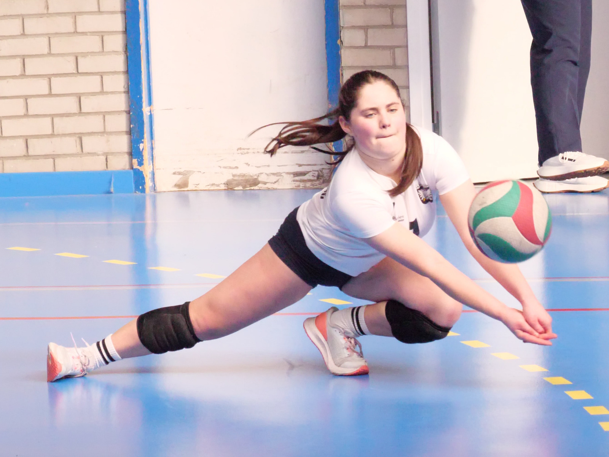
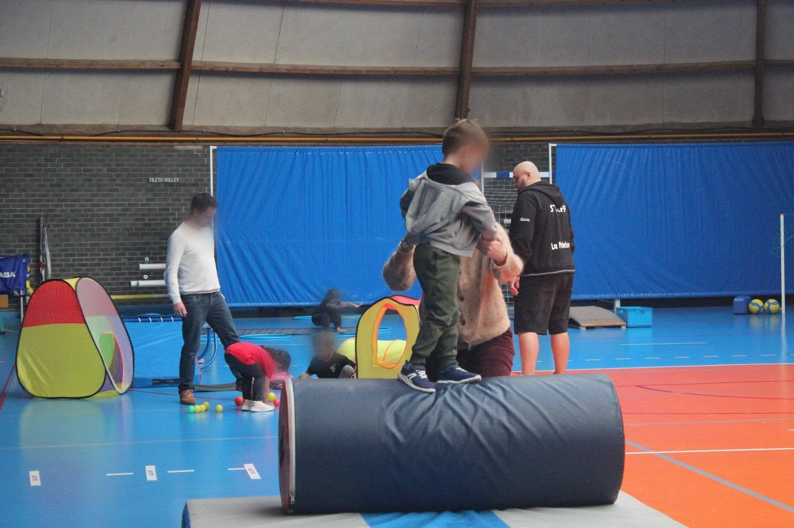
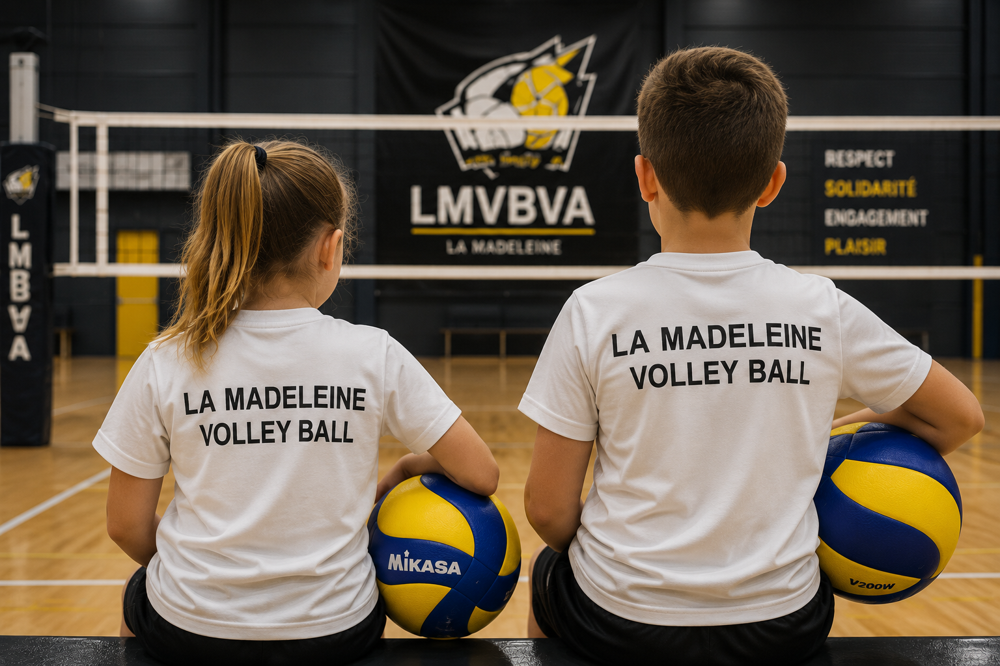
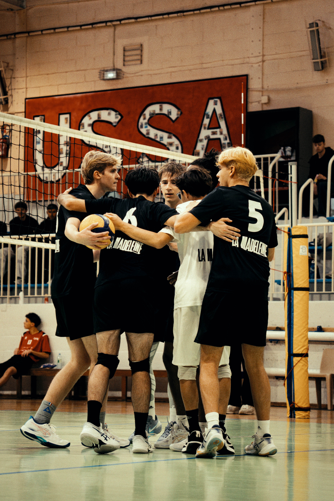
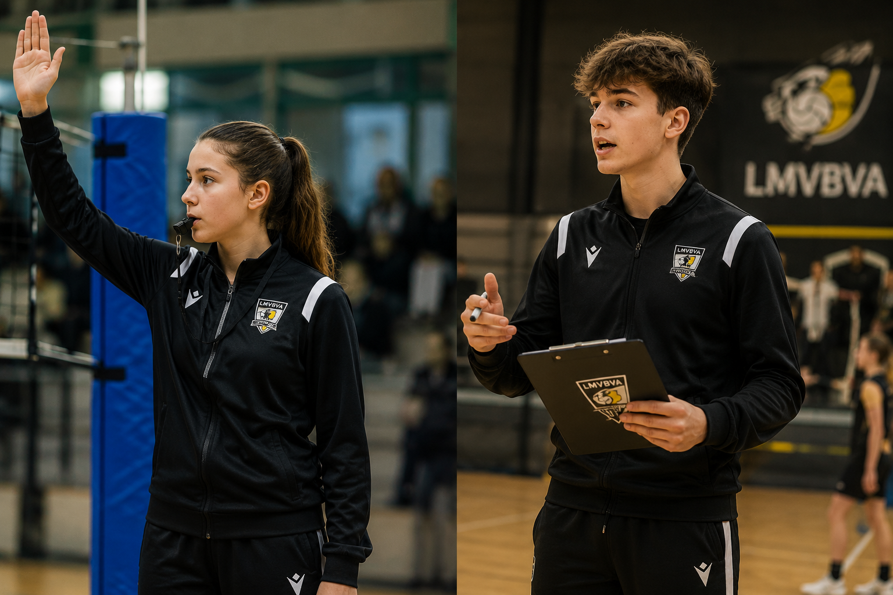

Une formation de qualité
Fondée sur une progression cohérente et durable, accordant une place essentielle au développement des valeurs éducatives, sportives et humaines.
Apprendre. Progresser. Transmettre.
Le programme des jeunes de La Madeleine VB se veut devenir une réfèrence et un gage de qualité dans la région. iL comprend 2 entraînements hebdomadaires (section Baby VB acceptée) et l'engagement de toutes les équipes en compétition: championnats départementaux et régionaux, et pour certaines équipes, coupe de France jeunes.
Le programme inclut également des stages de 5 jours pendant les vacances scolaires ( 4 par an ), la formation aux différentes fonctions d'encadrants mais également nous avons le projet d'organiser des échanges et stages internationaux avec des clubs partenaires. A suivre...
Notre équipe technique est composée d'un mixte d'entraîneurs très expérimentés et de jeunes entraîneurs prometteurs. Pour plus d'information sur le staff, veuilez consulter la page "Compétition".

Fondée sur une progression cohérente et durable, accordant une place essentielle au développement des valeurs éducatives, sportives et humaines.
Engagés dans un accompagnement exigeant, bienveillant et adapté à chaque étape de la progression.
Assurant un suivi cohérent du Baby Volley jusqu'aux équipes Seniors
Permettant à chacun de réaliser son potentiel d'une part mais aussi, d'autre part, à prendre des responsabilités et transmmettre aux plus jeunes.

Une première découverte du volley-ball à travers le jeu, la motricité, l'apprentissage des sports collectifs et plus généralement le plaisir de bouger.
La section de Baby Volley s'adresse aux enfants de 3 à 5 ans.
L'École de Volley accompagne les jeunes dans l'apprentissage progressif des fondamentaux techniques et collectifs.
La section concerne les catégories M11 et M9 ( 6 à 11 ans ). Dès M11, les enfants peuvent participer aux tournois régionaux M11.


L'Académie de La Madeleine VB regroupe les catégories M13, M15, M18 et M21 en féminines et masculins
Les différentes équipes participent aux compétitions inter-départementales ( M13, M15) et régionales ( M18 et M21 ), les équipes les plus expérimentées sont engagées en Coupe de France Jeunes.
Le développement du club passe également par la formation de ses encadrants, les jeunes joueurs d'aujourd'hui étant les encadrants et dirigeants de demain.
Ainsi, dans le cadre du programme de formation, les jeunes de l'Académie sont vivement incités à aider le club lors des entraînements de l'École de Volley, des plateaux de tournoi des plus jeunes, à assumer des fonctions d'arbitre, de marqueur, à se former à la gestion sportives lors des tournois ou encore à faire leurs premiers pas dans la la fonction d'entraîneur.
Le Club accompagne ces jeunes en leur proposant des formations en interne avec la direction technique du club et en externe avec les formations proposées par la Ligue.
